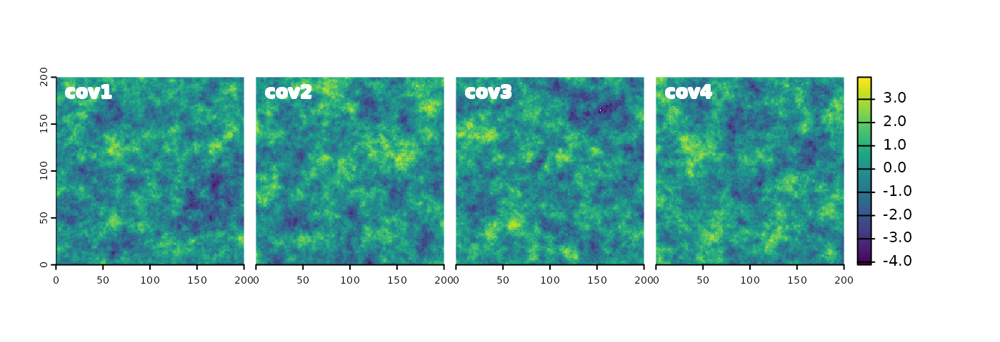

Covariates_and_outcomes.RmdLet’s start by attaching the necessary packages and setting the seed.
Next, we specify a raster template for the simulations.
rast_grid = terra::rast(xmin = 0, xmax = 200, ymin = 0, ymax = 200,
ncols = 200, nrows = 200)We can simulate any number of covariates based on specified
parameters using the sim_covariates() function. This
function is rather flexible when it comes to which parameters to use, as
it can take a range or a complete variogram model, and some additional
simulation arguments. This is shown below.
The first example shows the use of just a range
parameter to simulate four covariates for the provided raster grid. The
rest of the arguments (e.g., beta representing the average
value of the field, nmax representing the maximum number of
points to simulate, and psill representing the sill of the
variogram model) are set to default values.
covariates_one = sim_covariates(rast_grid, range = 10, n = 4)
terra::panel(covariates_one, nr = 1, col.main = "white")The second example uses a complete variogram model to simulate four covariates for the provided raster grid. Here, we specify not only the range but also the model type (exponential) and the sill of the variogram model.
covariates_two = sim_covariates(rast_grid, vgm = gstat::vgm(model = "Exp", psill = 1, range = 10), n = 4)
terra::panel(covariates_two, nr = 1, col.main = "white")
The third example uses a nugget effect to simulate four covariates without any spatial correlation.
covariates_three = sim_covariates(rast_grid, vgm = gstat::vgm(model = "Nug", psill = 2, range = 0), n = 4)
terra::panel(covariates_three, nr = 1, col.main = "white")The last example creates a single simulation of a binary outcome
(indicator = TRUE) based on a specified variogram model and
a beta value. The result of such a simulation depends on the specified
variogram model and the beta value.
covariates_four = sim_covariates(rast_grid, vgm = gstat::vgm(model = "Exp", psill = 10, range = 100), n = 1,
beta = 30, indicators = TRUE)
terra::plot(covariates_four, nr = 1, col.main = "white")The sim_covariates() creates new rasters. Now, we can
blend these rasters to create new outcomes with the
blend_rasters() function. This function accepts one or more
SpatRaster objects, and a formula that specifies how to
combine them. Let’s try it out on a few examples.
The first new raster is based on the first set of covariates and a formula that combines them by adding them together.
outcome_one = simsam::blend_rasters(covariates_one, ~ cov1 + cov2 + cov3 + cov4)
terra::plot(outcome_one)The blend_rasters() function can also be used to further
blend the outcomes with additional covariates. Here, we are adding a
random noise (cov1 from covariates_three) to
the outcome.
outcome_two = simsam::blend_rasters(outcome_one, ~ outcome + cov1, covariates_three)
terra::plot(outcome_two)The third example shows how to blend the first created outcome with a
binary covariate (cov1 from covariates_four).
Additionally, it also highlights the flexibility of the formula
notation, which allows, for example, the use of various mathematical
operations and constants.
outcome_three = simsam::blend_rasters(outcome_one, ~ outcome * (cov1 + 0.2), covariates_four)
terra::plot(outcome_three)Finally, the last example shows that the blend_rasters()
function can be used in a pipe-like manner.
outcome_four = simsam::blend_rasters(covariates_two, ~ cov1 + cov2 * cov3 + cov4) |>
simsam::blend_rasters(~ outcome * (cov1 + 0.2), covariates_four)
terra::plot(outcome_four)